Youth sport · focus, confidence & staying in the game
Most young players already know what to do. The hard part is reaching it when the pressure's on. Help them manage their focus, and they can use what they already have — when it matters most.
You'll know this one
Here's the part worth sitting with: that's not talent walking off the pitch. It's attention. The skill is still in there — they just can't reach it while their focus is stuck on the last mistake. Steady the attention, and the ability they already have comes back online. That one idea is the whole of Unbeatable.
Three roles · one shared language
Same belief, same tools — but a coach, a player and a parent each use them for a different job. Find your side.
For players
You know what to do. The hard part is doing it when it matters.
Learn the move and the kit bag, and get back to your game faster when your head's gone.
For players ↓For coaches
Help your players make better use of the coaching you already give them.
A shared language and simple tools that sit alongside your coaching — and a way to call the right one in the moment.
For coaches ↓For parents
What they learn through sport can help them navigate the challenges they face beyond it.
Swap "did you win?" and "you'll be grand" for something that actually helps — on the touchline and in the car.
For parents ↓For players
"I knew what to do — I just didn't do it." Nearly every player says it. It's not that the skill isn't there. It's that your head got loud and you couldn't reach it. That's a thing you can train.
Ever had one of these?
You don't need more information. You've got plenty. You need a fast way to the one thing that helps right now.
Getting distracted isn't the failure. Staying distracted is. Notice → return.
How much of me does this really deserve right now?
Your go-to's not working? Stop asking "how good am I?" — ask "how can I help right now?"
Ten moments every player meets. Rate yourself, get a score out of 100 and two things to try straight away. Takes about three minutes.
For coaches
When the game's getting away, the instructions come faster and louder — and the players freeze more, not less. The problem was rarely the drill. It's that volume reads as emotion, and a panicked player can't reach what they know.
Sound familiar?

A shared language that sits alongside your coaching, not on top of it. No new facility, no gear, no lost pitch time — it runs on how players think, talk and respond.
And "the Call." Instead of shouting "focus" — focus on what? — you name the tool the moment needs. "Five, five, five." "Mirror, mirror." "Compete." A specific instruction a drilled player can act on in a heartbeat.
The free 90-second club snapshot gives you an honest read before you commit to anything.
For parents
You know the forty minutes after a bad result. "Sure, it's only a game" lands as a brush-off; a full post-match review is the last thing they want. It doesn't need dismissing and it doesn't need dissecting — it needs one respectful thing instead.
Sound like your house?
Swap reassurance for a question: "What's your job today? What can you control?" Nine times out of ten the kid already has the answer — the nerves were just blocking it.
And a better first question after: not "did you win?" but "how was your CARE today?" — Communication, Attitude, Resilience, Effort. The car ride becomes a classroom instead of a verdict.
Same tools we give the clubs. Start with a free chat, or send your club the snapshot.
"Isn't that a lot to take on?"
A game you've played a hundred times is full of moving parts — and not remotely overwhelming.
When people first see everything Unbeatable covers, the honest reaction is "that's a lot." It is. But you never carry all of it at once. Like a game you know inside out, you don't re-learn it each time — you go straight to the decision and the action. You go room by room. You reach for the one thing the moment needs.
That's the job: making the right responses familiar territory, so under pressure a young player gets to the right call faster and faster — until it runs automatically, like a trained shot.
How it works · the same move, every time
Not a lecture to remember. A habit to drill — and drilling gets quicker.
Name the actual problem instead of just feeling it.
They're not stuck — they've got something for this.
Choose the one that fits this moment, right now.
Apply it, see what it did, reset and go again.
The kit bag · the tools
How you see it
"I keep comparing myself to everyone else."
"I only feel good when we win."
"One mistake and my whole head goes."
How you organise
"I never get round to my own stuff."
"I feel like I'm not getting any better."
"I want it, but I'm not doing the work."
How you deliver, when it's live
Everyone has a way to help. Stop asking "how good am I?" — start asking "how can I help?"
"I made the run, said nothing, no pass came."
New tools slot in as players meet new problems.
Start here
I'll be straight with you — I'm trying to prove a point. Twenty years coaching and fifteen parenting have me convinced that most of what holds young players back is distraction, not a lack of talent or the wrong mindset. So let's test it on your players, not just talk about it.
Who's behind it
Unbeatable started in the car, with my daughter Freya, after a tough game — watching her carry one moment the whole way home, knowing the ability was never the problem. The problem was where her head was.
Twenty years coaching and fifteen years parenting kept showing me the same thing: the players who pull ahead aren't always the most gifted — they're the ones who can steady their attention and get back to what they can do. That's a skill. And a skill can be taught.
So Unbeatable is deliberately practical and on-the-pitch — player development in plain language, never therapy, never guarantees. Just a better way to help a young person face what's in front of them and keep finding a way forward.
Ninety seconds, free, no commitment — just a read on where your players are right now.
What Unbeatable isn't: not therapy, not a wellbeing talk, not a mental-health programme — and no extra workload, no lost pitch or class time. It complements your coaching and pastoral care; it doesn't replace them.